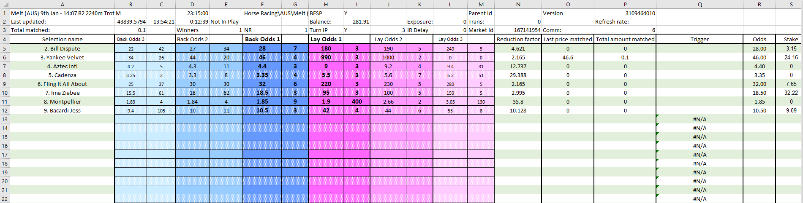

Gruss Betting Assistant: Kelly Criterion staking¶
Automating with Kelly staking method and Gruss Betting Assistant¶
In other tutorials on the Betfair Automation Hub, we've gone through how to automate betting strategies based on ratings, market favourites and tips. For this tutorial, we're going to implement a staking strategy which can be used in conjunction with most other betting strategies. Determining how much you stake on a wager is a crucial consideration for successful punters. The Kelly Criterion is a staking method well known across wagering and investment professionals which should be known and considered by all Betfair punters.
Gruss Betting Assistant has a spreadsheet functionality that lets you place bets using your own variables and information from the live market, which is what we've used here to not only automate thoroughbred ratings from the Hub, but to also add the Kelly staking method. There are so many different ways to use this part of Gruss and we're very open to any thoughts about more effective ways of implementing this sort of strategy. You're welcome to reach out to us on automation@betfair.com.au with your feedback and opinions.
- The plan¶
We'll be building on the Gruss Ratings tutorial which utilizes the the Betfair's Data Scientists' thoroughbred ratings model. For this tutorial, we'll be assuming that you have already gone through the ratings tutorial, but if you havn't, you can check it out here, as the concepts and underlying trigger based strategy here do build on what we covered previously.
Staking strategies such as Kelly Criterion can be adventagous for automation when used in conjunction with a successful selection strategy. Rather than sending your bot to place static stake values for every bet, methods such as this let you place bet stakes which take into consideration your ratings and betting bank.
If you're not familiar with the Kelly Criterion staking strategy, we recommend having a quick read of the Kelly staking page on the Betfair Hub. There are plenty more resources on the internet relating to the strategy which may provide a more in depth understanding.
Resources
- Ratings: Betfair's Data Scientists' thoroughbred ratings model
- Before you start: check out the Gruss Ratings tutorial
- Rules: here's the spreadsheet we set up with our macros and rules included, but you'll obviously need to tweak it to suit your strategy
- Understanding how the Kelly Criterion staking strategy works
- Tool: Gruss Betting Assistant
- Recapping the strategy covered in the Gruss ratings automation tutorial¶
We'll be using the same trigger strategy that's outlined in the Gruss Ratings tutorial which uses the thoroughbred ratings shared by our Data Scientists on the Hub. Whilst the trigger will remain unchanged, we'll need to make small tweaks to the stake column of the 'MARKET' worksheet (column S) and we've added an additional option to the 'SETTINGS' worksheet which will allow you to choose either a half Kelly or full Kelly stake. If you havn't yet read our Gruss ratings tutorial, we highly recommend that you do so as to understand how the bet placement trigger works. The tutorial can be found here.
- Set up¶
Make sure you've downloaded and installed Gruss, and signed in.

- Writing your rules¶
We're using a customised version of the Gruss Ratings tutorial template to implement our staking strategy, so it can not only make betting decisions based on our ratings, but also calculate the stakes based on the Kelly Criterion staking strategy. Excel is an excellent tool, but it can take an investment of time to be able to use it effectively.
This is how we used Excel to implement our set of rules.
- Using cell references to simplify formulas¶
Throughout this tutorial, we'll be referencing certain cells with custom names that will make it easier to understand and follow the formulas as we progress. This is an especially effective method to keep on top of more complex strategies that require long formaulas to implement.
Cell names used in this tutorial
- Account Balance refers to cell I2 of the 'MARKET' worksheet
- UserStake refers to cell D4 of the "SETTINGS' worksheet where you can change between half Kelly or Full Kelly stake
- StakeType refers to cell X1 of the "SETTINGS' worksheet
- Full_Kelly refers to the entire Q Column of the 'KELLY' worksheet
- HALF_Kelly refers to the entire R Column of the 'KELLY' worksheet
Calculating the Kelly stake
As explained in the Kelly Criterion staking strategy Betfair page, the formula to claculate the Kelly stake is:
(BP-Q)/B
Where B is the odds you are getting -1 (because we're using decimal odds), P is the likelihood of the bet winning and Q is the probability of losing (or 1 – P).
To show the steps of the calculation and to ensure that it's doing what we're expecting it to, we've created a 8 column table in the 'KELLY' worksheet.

Stepping through each step:¶
- Column K - best available Back odds Check the runner's name in our ratings and match it with the runners listed in the market ('MARKET' worksheet) and return the best available back odds from the G column
=IFERROR(INDEX(Market!$B$5:$M$50,MATCH(H2,Market!$A$5:$A$50,0),5),"")

- Column L - Exchange odds -1 Take the value returned in column K and minus 1 (because we're using decimal odds)
=IFERROR(K2-1,"")

- Column M - Probability of win % 1 divided by the rated price from column I which converts the decimal odds to a percentage probability
=IFERROR((1/I2),"")
- Column N - Probability of loss % 1 divided by the probability of a win from column M
=IFERROR(1-M2,"")

- Column O - % of bankroll to use - Full Kelly Take the best available back odds (minus 1) from the L column, times it by the probability to win in the M column, then minus the probability to lose from the N column. Finally, divide that by the best available back odds (minus 1)
=IFERROR(((L2*M2)-N2)/L2,"")

- Column P - % of bankroll to use - Half Kelly Take the calculation from column O and simply divide it by 2
=IFERROR(O2/2,"")

- Column Q - Amount to bet - Full Kelly If the account balance times the percentage of the bankroll to use for half kelly stake is greater than 0, retrieve the account balance which Gruss populates in cell I2 of the 'MARKET' worksheet and times it by the percentage of the bankroll (Column O) to use for the Full Kelly. If it's not greater than 0, then simply print 0.
=IFERROR(IF(AccountBalance*P2>0,AccountBalance*O2,"0"),"")

- Column R - Amount to bet - half Kelly If the account balance times the percentage of the bankroll to use for half Kelly stake is greater than 0, then calculate the account balance times the percentage of the bankroll. If it's not greater than 0, then simply print 0.
=IFERROR(IF(AccountBalance*P2>0,AccountBalance*P2,"0"),"")
- Result: Once the calculations are complete, we're left with two stake values that we will be able to use with our trigger. Column Q for a full Kelly stake and column R for a half Kelly stake. In the below image examples, we have a market for Geelong with the half and full Kelly.


Excel functions
- IF statement: IF(if this is true, do this, else do this)
- IFERROR: If there is an error that occurs in the cell, display nothing
- AND statement: AND(this is true, and so is this, and so is this) - returns true or false
- Absolute references: if you're copy/pasting formulas it's important that you make links absolute when you don't want the cell being referenced to change relative to the new cell the formula is being pasted into. You do this by putting a $ in front of the parts of the reference you don't want to 'move'.
- Preparing the spreadsheet¶
You need to copy/paste these eight formulas into the relevant column cells which is highlighted as blue - We copied ours into 1500 rows in the sheet, just in case you have a large number of ratings. Excel is clever enough to automatically update the relative links in the formulas, so you should be able to copy/paste the same formula into each cell as long as you've got your relative and absolute references straight.
- Stake: Here we're telling excel to take a look into B column, if a runner name is present, then match that name to either the value which has been calculated for the full or half Kelly, depending on what has been selected by the drop down box in the 'SETTINGS' worksheet.
=IF(B9="","",INDEX(KELLY!Q:R,MATCH(B9,RunnerName,0),StakeType))

- You know the drill¶
The process is effectively the same from here on as for our previously automated strategy, but we've included it here just in case you want a refresher or are new to Gruss.
- Selecting markets¶
Gruss makes it really easy to select markets in bulk. You could go through an add each market individually, but it's much easier to just use the quick pick functionality to add all Australian racing win markets.

You also need to make sure you set it up so that the program will automatically move on to the next market, when the previous one jumps.

- Linking the spreadsheet¶
This is a little tricky the first time, but easy once you know how. Make sure you have the Excel sheet saved to your local computer - when we tried using a file we had saved in OneDrive it simply didn't work. Open the Excel sheet, then click on Excel/Log current prices.

It will autofill the workbook and sheet names. You'll then need to make sure you tick:
- Enable triggered betting
- Clear Bet refs on auto select market
- Quick pick reload triggers select first market
- Show balance which is required for this staking strategy to work
Then click OK and the sheet with be linked with the program.

And you're set!¶
Once you've set your spreadsheet set up and you're comfortable using Gruss Betting Assistant it should only take a number of seconds to load your markets and set your strategy running for the day. Just make sure you have all of the app settings correctly selected before you leave the bot to run, as some of them reset by default when you turn the program off.
Note:
you will need to leave your computer up and running for the duration of the chosen markets, as the program needs the computer to be 'awake' to be able to run.
Areas for improvement¶
There are parts of this approach that we're still trying to get to work to our liking, and we'll update this article as we find better solutions. If you have any suggestions for improvements please reach out to automation@betfair.com.au - we'd love to hear your thoughts.
For example, the spreadsheet only binds with one market at a time, so if one market gets delayed and runs overtime the program won't be able to move on to the next market - we missed some races because of this.
What next?¶
We're working through some of the popular automation tools and creating articles like this one to help you learn how to use them to implement different styles of strategies. If you have any thoughts or feedback on this article or other programs you'd like to see us explore please reach out to automation@betfair.com.au - this article has already been updated with extra learnings including variable percentages and new macros.
Disclaimer¶
Note that whilst automated strategies are fun and rewarding to create, we can't promise that your betting strategy will be profitable, and we make no representations in relation to the information on this page. If you're implementing your own strategies, you do so entirely at your own risk and you are responsible for any winnings/losses incurred. Under no circumstances will Betfair be liable for any loss or damage you suffer.